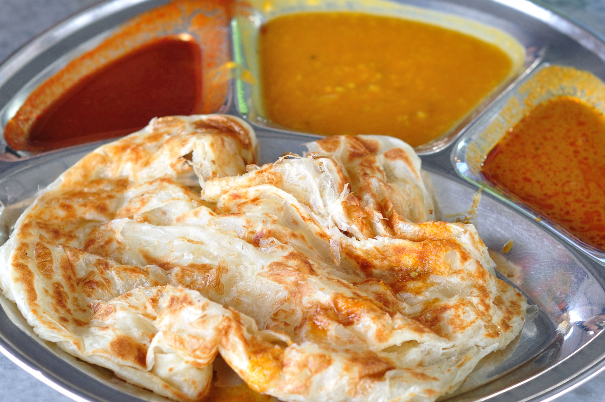
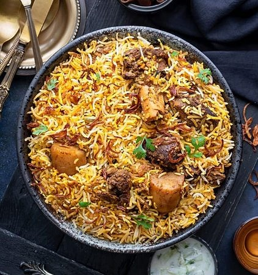
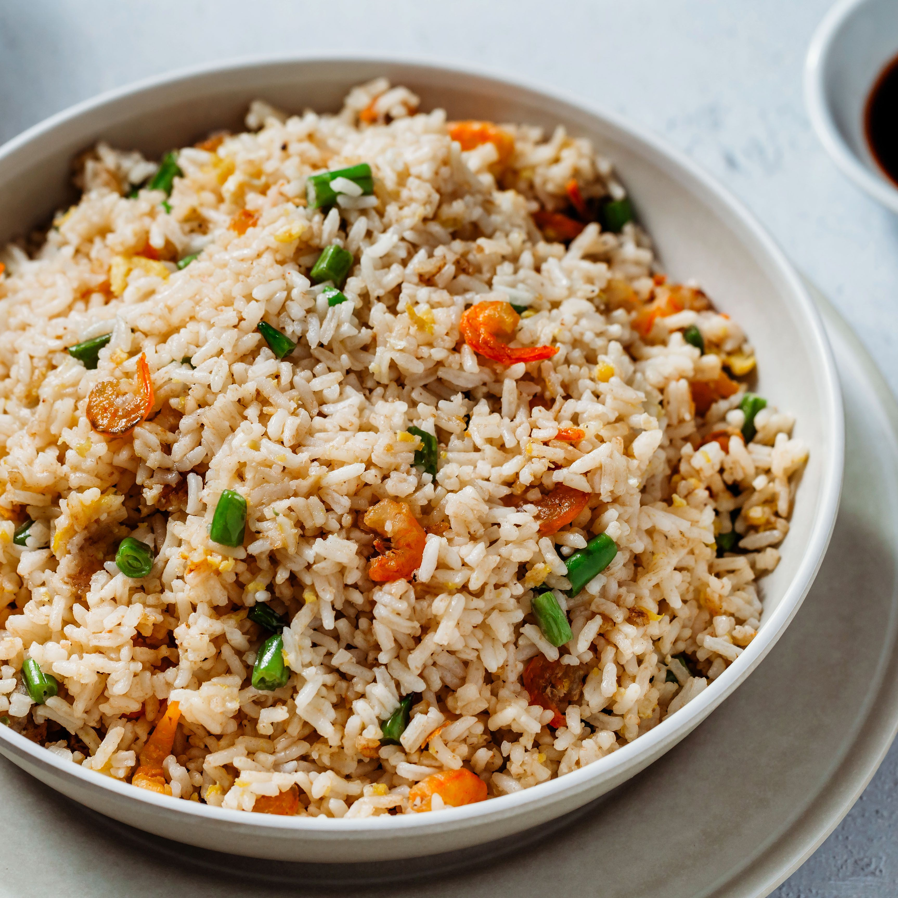
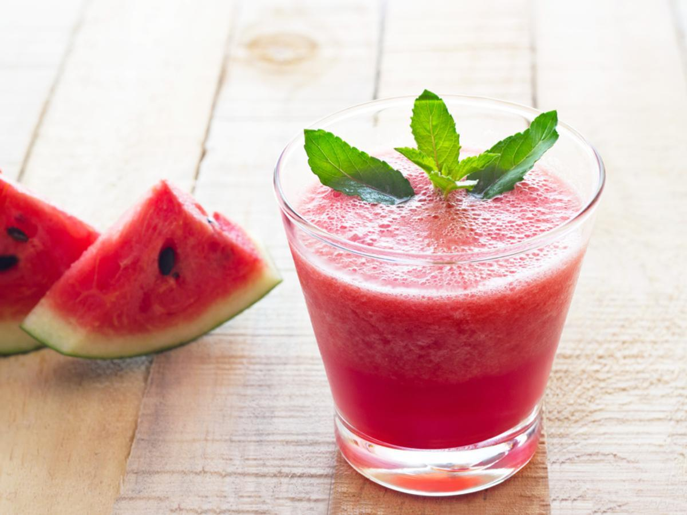
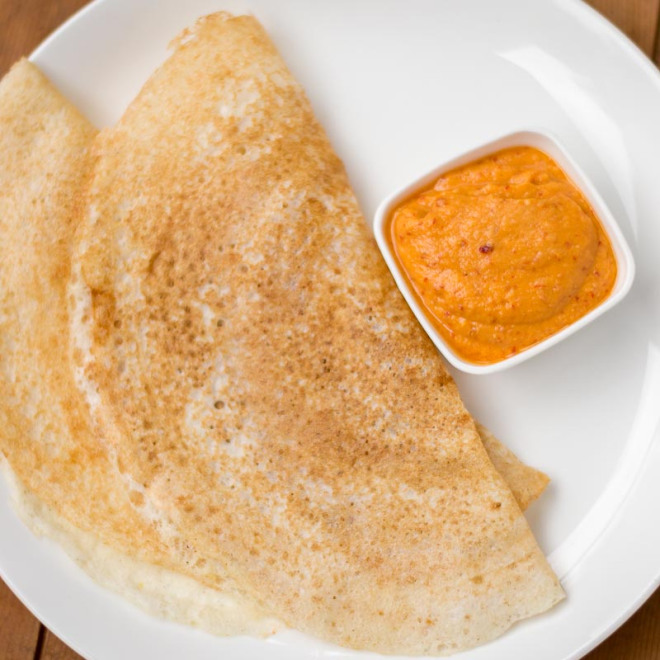
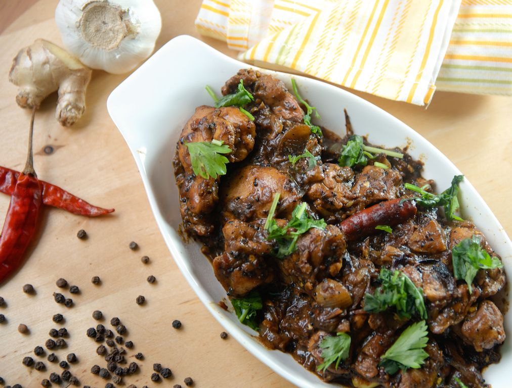
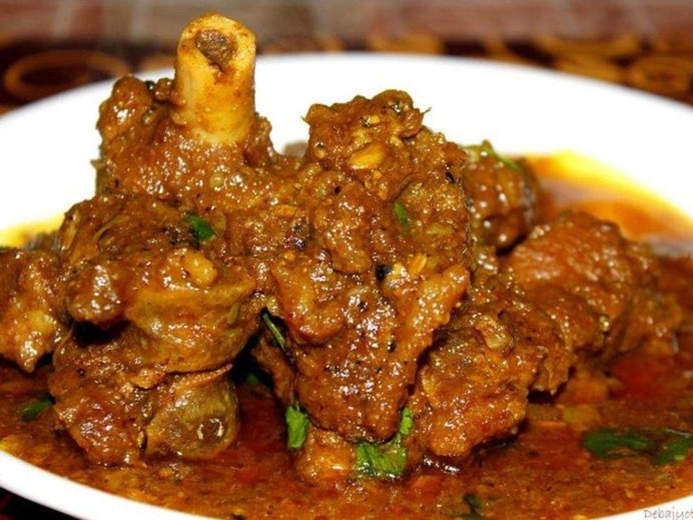
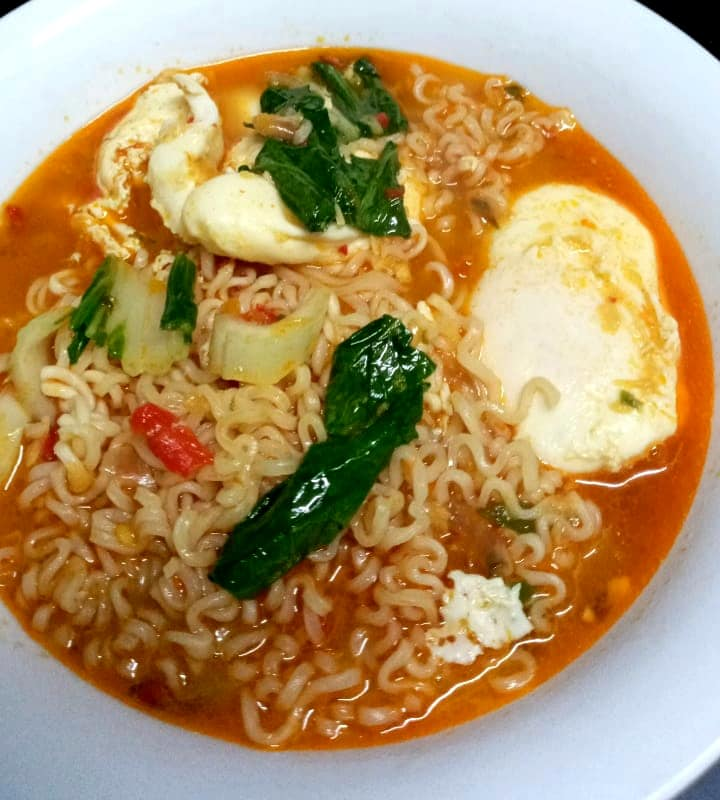
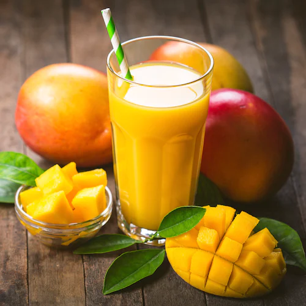

Roti canai
Roti Canai,is an Indian-influenced flatbread dish.

Biryani
Biryani is a mixed rice dish originating among the Muslims of the Indian subcontinent.

Fried rice
Fried rice is a dish of cooked rice that has been stir-fried.

watermelon juice
Delicious and refreshing watermelon juice,a favorite drink in the summer time!.

Tosai
A dosa is a thin pancake.

Pepper Chicken

Mutton
generically sheep meat, are the meat of domestic sheep.

Maggi Sup

Milk
Milk is a nutrient-rich liquid food produced by the mammary glands of mammals.

Mango Juice
contain many vital vitamins and minerals that are essential for a healthy human body.